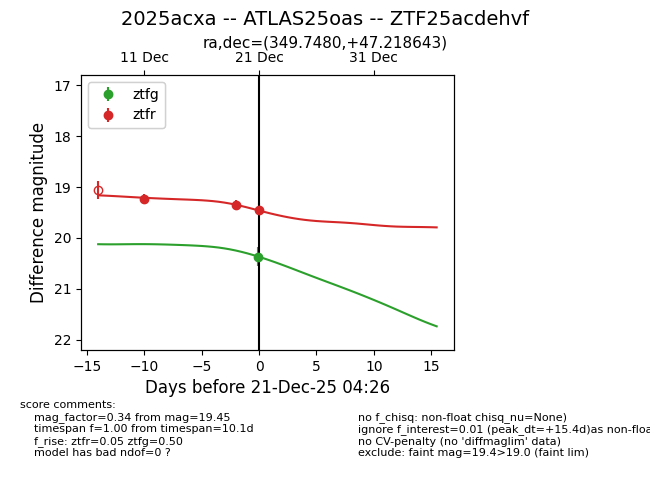
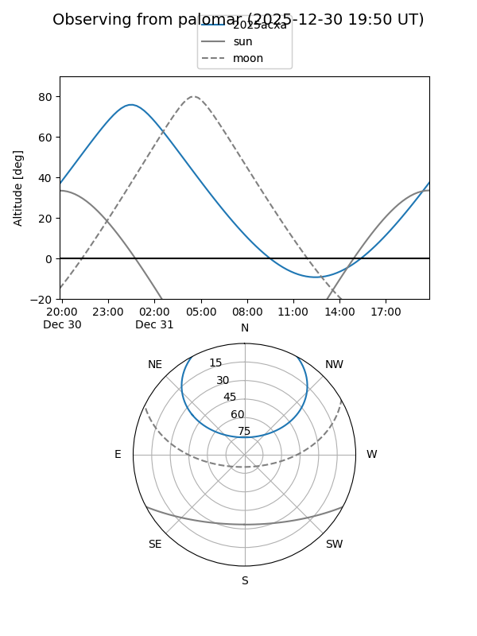
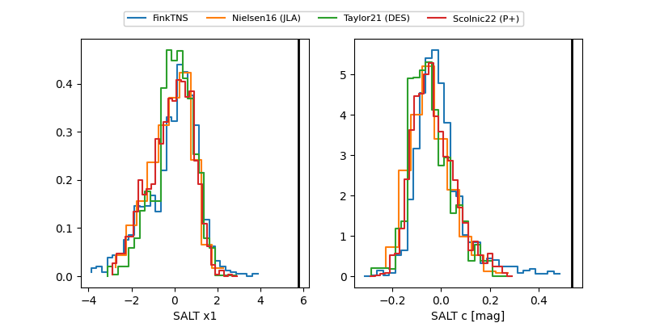

2025acxa
Target 2025acxa at 2025-12-21 03:28
Aliases and brokers:
FINK: fink-portal.org/ZTF25acdehvf
Lasair: lasair-ztf.lsst.ac.uk/objects/ZTF25acdehvf
ALeRCE: alerce.online/object/ZTF25acdehvf
TNS: wis-tns.org/object/2025acxa
YSE: ziggy.ucolick.org/yse/transient_detail/2025acxa
alt names
ZTF25acdehvf (ztf,fink_ztf)
2025acxa (tns,yse)
ATLAS25oas (atlas)
Coordinates:
equatorial (ra, dec) = 349.7480,+47.21864
equatorial (HMS+DMS) = 23:18:59.52,+47:13:07.11
galactic (l, b) = (107.0665,-12.78531)
Flags:
Photometry:
last ztfg=20.37, ztfr=19.35
1 ztfg, 2 ztfr detections
Lightcurve

Visibility


Additional plots
